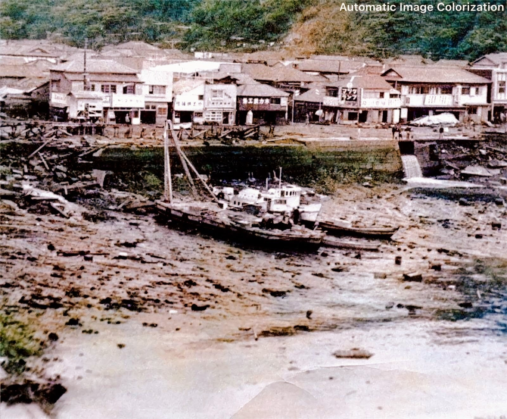
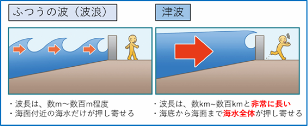

海嘯來前海水一定會後退嗎
有些人以為海嘯來臨前一定會看到海水突然退去，但實際上這並不總是會發生。會不會出現先退潮再漲潮的現象，取決於當時造成海嘯的機制與波的傳播方式。
以地震引發的海嘯為例，當地殼發生劇烈變動，例如斷層錯動導致海底迅速抬升或陷落，會擾動上方的海水並產生海嘯。海嘯是一種波動，當它向岸邊推進時，若是波谷先抵達，會將海水拉向外海，導致沿岸水位急劇下降。但若是波峰先到，那麼海水會直接上升，並不會出現退潮的現象。

1960 年智利地震時日本女川的港口，海水退去露出海底
風浪和海嘯的差別
風浪是由風在海面吹動所產生的擾動，波長通常只有數公尺到數百公尺，周期約數十秒，且只有擾動海水表層。而海嘯則完全不同，海嘯的波長可以長達數百公里，周期可達數分鐘到數小時，而且是從海底到海面的海水全體的擾動，破壞力與風浪完全不同。

風浪和海嘯的差別